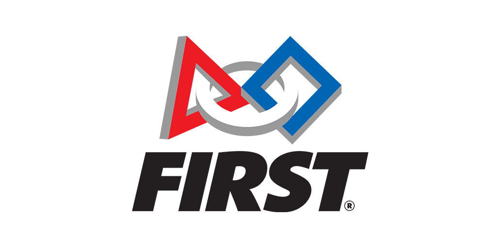

Hey everyone! My name is Anne George and welcome to my personal website! I grew up in Novi, Michigan. I have lived in Michigan my whole life and am currently a senior at the University of Michigan (go blue!).
I am graduating May 2023 with a B.S.E in Computer Science and a minor in UX. In my free time I love to spend time with my friends and family (I have 9 first cousins that live in a 10 minute drive from my house so safe to say I see them a lot).
I'm passionate about travelling, enjoy spending time outdoors, and love to try new things.
Education
University of Michigan
Ann Arbor, Michigan
2019-2023
Currently a rising senior at the University of Michigan. I plan to graduate in May 2023 with a degree in Computer Science and a minor in User Experience.
Also, I'm an Instructional Aide for EECS 497, the senior capstone MDE that focuses on human centered software engineering.
GPA: 3.61
Novi High School
Novi, Michigan
2015-2019
Graduated from Novi High School
National Merit Semi-Finalist, AP Scholar Distinction
Involved with: Student Council Executive Board, Robotics, Lacrosse, National Honors Society
GPA: 3.90
Experience
Microsoft, Summer 2022
Applied existing APIs to Clipboard History codebase to protect encrypted data via Windows Hello
Developed a project roadmap and developer specification for adding Personal Data Encryption to Clipboard History
Designed manual test cases that led to the discovery of unexpected UI behavior caused by an existing in-memory cache
Apple, Summer 2021
Reduced developer debugging time by writing Python scripts and creating interpretive plots with Matplotlib for Thread anomaly detection
Developed 40+ unit tests in Objective-C for iOS and tvOS products to validate public developer APIs for ThreadNetworkFramework Library
Discovered a crash tracer bug, allowing team to reduce crashes per day to 0
PrimNotes, Jan 2021-April 2021
Part of 4 person design team via student org MProduct
Designed features for an application that streamlines the notetaking process for product managers and founders
Engineered prototype with mock features using Next.js and JavaScript for small user test groups
Conducted user interviews to identify market demand and key product features for a customer discovery tool
Ford, Summer 2020
Developed a Java Spring Boot application using a MongoDB database to optimize plant operation runtimes by matching employee data to unmanned machines through Optimal Staffing project
Implemented Spring Boot design patterns and produced high quality code through test driven development
Competed in Intern Innovation challenge with solution that crowdsourced driving hazard data to improve autonomous vehicle user experience; received 'Most Viable' award and selected as 1 of 5 finalists to present to Ford executives
Real Time Water Lab, Sept 2019 - Mar 2020
Created a low-cost water sensor module to provide efficient water management
Researched and identified alternative pressure transducer that reduced module cost by 95%, allowing for large scale deployment
Prototyped design with Particle Photon, gaining experience in hardware programming in C
Integrated new design with existing water sensor nodes and tested durability for field usage
FIRST, 2011-2019

Led Outreach group in engaging with community and starting initiatives to spread awareness of the program, individually creating 5 teams and dedicating 200+ hours mentoring.
Coordinated team of 120+ students throughout the season as a member of Steering Committee, playing a key role in team decision making.
Envisioned, organized, and executed a STEM camp run by female team members exclusively for middle school girls to encourage women in STEM, resulting in a 50% retention rate of participants.
Extracurriculars
BLUElab
Project lead
Collaborated on Guatemalan-based project team that focuses on socially engaged and sustainable design solutions
Prototyped more efficient stoves and washing machines to decrease financial burden on families, enabling children to continue their education
Traveled to Guatemala in Spring 2020 to identify needs of the Cobán community
Kappa Theta Pi
Member
Grow professionally, academically and socially at University of Michigan's premier technology fraternity